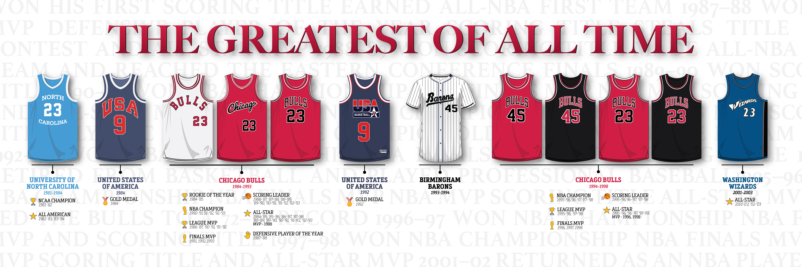

Michael Jordan’s career is defined by iconic moments, achievements, and the uniforms he wore. The Greatest of All Time tells the story of his career through the jerseys he wore along the way, from UNC and Team USA to the Chicago Bulls, Birmingham Barons, and Washington Wizards.
The 30" × 10" print combines illustration, typography, and information design to turn decades of accomplishments into a single visual timeline.
Role: Concept, Illustration & Design
